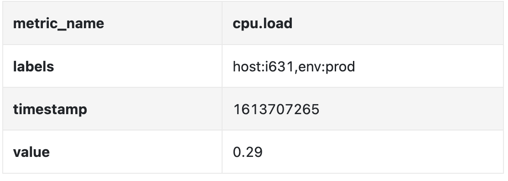
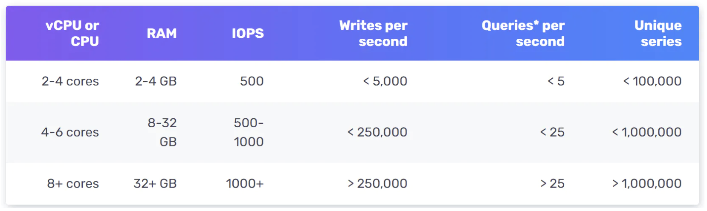
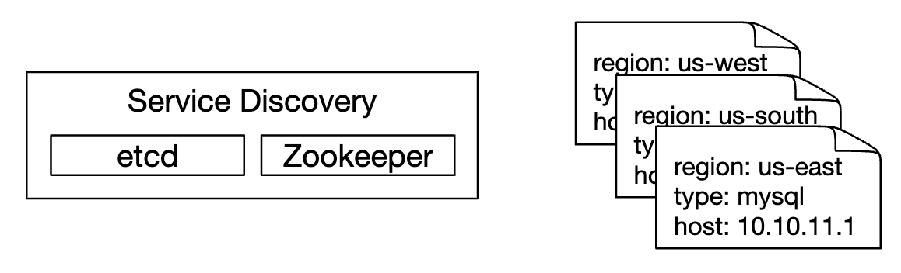
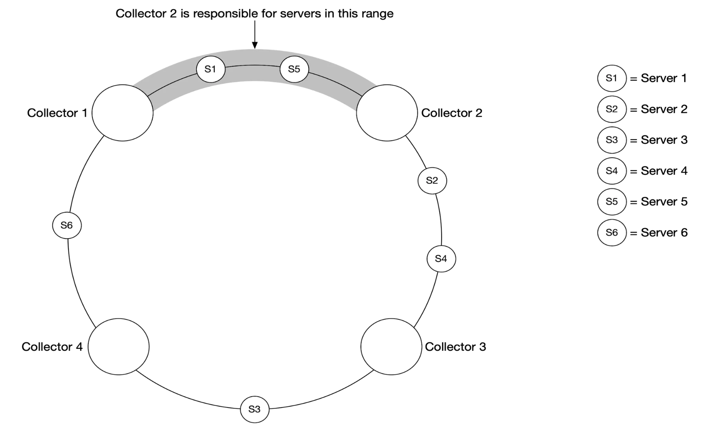
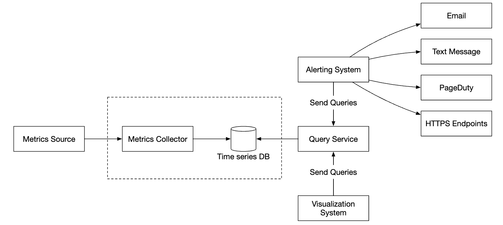
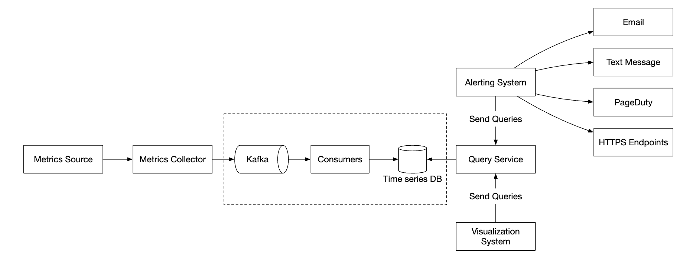
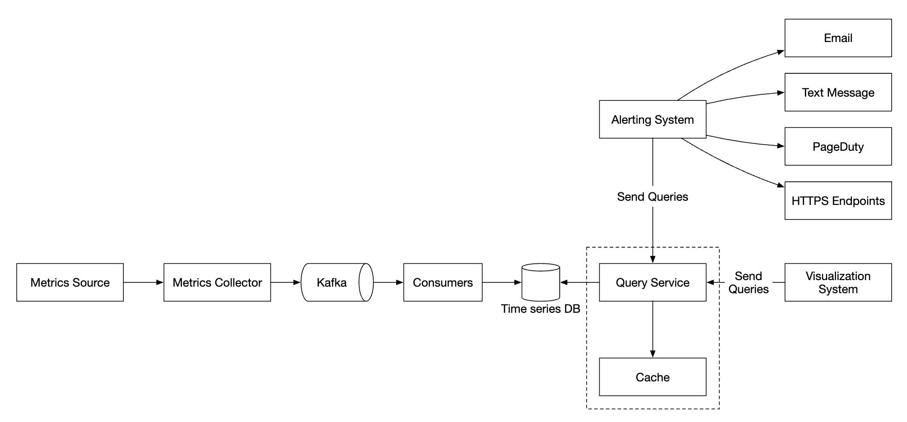

Metrics Monitoring & Alerting System
Datadog/Prometheus jaisa internal monitoring system — ~1 crore metrics collect karna, time-series DB mein store karna, downsample karna, aur bina miss kiye alert bhejna. Spring Boot Actuator + Micrometer wale engineer ke liye yeh "andar se kaise kaam karta hai" wala chapter hai.
Introduction
Monitoring system high availability ka "aankh aur kaan" hai. Payment gateway ka p99 latency badha, ya Kafka consumer lag badh raha hai — pehle monitoring ko pata chalna chahiye, customer ko nahi. Is chapter mein hum infra metrics (CPU, memory, disk, QPS) ka system design karte hain — logs (ELK) aur tracing (Jaeger/Zipkin) scope ke bahar hain.
Step 1: Requirements aur scope
"Monitoring" ka matlab bahut kuch ho sakta hai, to pehle clarify karo:
- Kiske liye? Internal use (DataDog jaisa SaaS nahi — multi-tenancy, billing scope bahar).
- Kaunse metrics? Operational: CPU load, memory, disk, requests/sec. Business metrics out of scope.
- Scale: 100M DAU, 1000 server pools × 100 machines × ~100 metrics/machine = ~1 crore (10M) metrics.
- Retention: 1 year. Raw 7 din, phir 1-minute resolution 30 din tak, phir 1-hour resolution 1 saal tak.
- Alert channels: Email, phone, PagerDuty, webhooks.
- Logs aur distributed tracing — nahi.
Non-functional requirements
- Scalability — naye metrics/alerts aate rahenge
- Low latency — dashboards aur alerts ke queries fast
- Reliability — critical alert miss nahi hona chahiye
- Flexibility — naye technologies plug ho sakein
Step 2: High-level design

Data model — time series
Metric data = time series: ek naam + optional labels/tags + (timestamp, value) pairs ki list.


Example 2 — "us-west ke saare web servers ka last 10 min ka average CPU": line protocol mein data aisa dikhta hai:
CPU.load host=webserver01,region=us-west 1613707265 50
CPU.load host=webserver01,region=us-west 1613707265 62
CPU.load host=webserver02,region=us-west 1613707265 43
CPU.load host=webserver02,region=us-west 1613707265 53
...
CPU.load host=webserver01,region=us-west 1613707265 76
CPU.load host=webserver01,region=us-west 1613707265 83Average = last column ka average. Yeh "line protocol" format Prometheus, OpenTSDB jaise tools mein common hai.


http_error_count{servicepool:s1, method:GET, machinename:m1/m2} hain. Orange rectangle query hai: "servicepool=s1 aur method=GET ke errors, saari machines, t4 se t7" — yaani labels se rows filter, time se columns slice, phir aggregate.Access pattern: write-heavy (constant stream) aur reads spiky — normally kam, incident ke time ek dum burst.
Storage choice
- General-purpose RDBMS: expert tuning ke bina is scale pe nahi chalega.
- Generic NoSQL: possible, lekin efficient time-series schema banana mushkil.
- Purpose-built TSDB: OpenTSDB (Hadoop/HBase pe — woh infra na ho to mushkil), Twitter MetricsDB, Amazon Timestream, aur sabse popular InfluxDB aur Prometheus — dono in-memory cache + on-disk storage.

userId, transactionId ya full URL with IDs daal diya, to series ki ginti crore mein jaayegi aur TSDB memory se mar jaayega. Rule: labels bounded hone chahiye (region, service, status code, method). High-cardinality data logs/traces mein jaata hai, metrics mein nahi.High-level design

- Metrics source: app servers, DBs, queues…
- Collector: data gather karke TSDB mein likhta hai
- TSDB: store + custom query interface
- Query service: DB ke upar abstraction (DB powerful ho to skip)
- Alerting aur Visualization
Step 3a: Metrics collection — pull vs push
Metrics mein thoda data loss chalta hai — clients fire-and-forget kar sakte hain. (Payments ke ledger se bilkul ulta mindset!)

Pull model



/metrics endpoint pe HTTP request karke data pull karta hai. Endpoint changes ke liye collector change notifications register kar sakta hai ya periodic poll.Is scale pe ek collector kaafi nahi; multiple collectors chahiye, lekin do collectors same server ko double pull na karein. Solution: consistent hash ring.

Push model


| Pull | Push | |
|---|---|---|
| Easy debugging | ✅ /metrics endpoint kabhi bhi laptop se dekh lo | Data nahi aaya to network issue ho sakta hai |
| Health check | ✅ Pull fail = server down, turant pata | Data nahi aaya — server down ya network? clear nahi |
| Short-lived jobs | Batch job pull se pehle khatam (fix: push gateway) | ✅ Job khud push kar deta hai |
| Firewall / multi-DC | Saare endpoints reachable hone chahiye | ✅ LB + autoscaling, kahin se bhi data aa sakta hai |
| Performance | Usually TCP | Usually UDP, lower latency (lekin TCP setup cost payload ke saamne chhota) |
| Data authenticity | ✅ Targets config mein pre-defined | Koi bhi push kar sakta hai → whitelist/auth chahiye |
Clear winner nahi hai. Prometheus = pull, CloudWatch & Graphite = push. Badi company ko dono chahiye.
spring-boot-starter-actuator + micrometer-registry-prometheus lagao, aur /actuator/prometheus endpoint ban jaata hai — exactly book ka "pull model /metrics endpoint". Kubernetes pe Prometheus service discovery pods ko annotations/ServiceMonitor se dhundhta hai. Short-lived Spring Batch jobs ke liye Prometheus Pushgateway. Aur OpenTelemetry Collector push (OTLP) style ka modern example hai.Step 3b: Transmission pipeline ko scale karna

Problem: TSDB down hua to collectors ka data kahan jaayega? → beech mein Kafka.

- Kafka reliable, scalable buffer hai; collection aur processing decouple.
- TSDB down → data Kafka mein retain, baad mein replay. Data loss se bachav.

Downside: Kafka ka operational overhead. Alternative: Facebook ka Gorilla paper (VLDB 2015) — Facebook ka in-memory TSDB; isme timestamps ke liye delta-of-delta aur values ke liye XOR compression se ek data point average ~1.37 bytes mein store hota hai, aur paper hi "85% queries last 26 hours ke data pe" wala observation deta hai. Kaise padhein: Section 4 (compression) pe focus karo. Full guide: links page.
http_requests_total) ek partition ko hot bana dega. Isliye notes bolte hain "further partition by tags". Kafka Streams/Flink ke saath windowed aggregation karke pre-aggregate karna common hai.Aggregation kahan karein?
| Jagah | Fayda | Nuksan |
|---|---|---|
| Collection agent | Data volume source pe hi kam | Sirf simple logic (e.g. 1 min counter) |
| Ingestion pipeline (Flink) | DB writes bahut kam | Raw data gaya → precision loss, late events handle karne padte hain |
| Query side | Koi data loss nahi | Query slow — bahut data process |
Step 3c: Query service

Alag query service DB ko clients se decouple karta hai (DB badalna aasaan). Lekin Grafana jaise tools ke paas already TSDB plugins hain, aur achhe TSDB ka apna cache hota hai — to yeh layer optional hai.
TSDBs SQL support kyun nahi karte? Kyunki time-series ops SQL mein ugly hain. Exponential moving average SQL mein:
select id, temp,
avg(temp) over (partition by group_nr order by time_read) as rolling_avg
from (
select id, temp, time_read, interval_group,
id - row_number() over (partition by interval_group order by time_read) as group_nr
from (
select id, time_read,
"epoch"::timestamp + "900 seconds"::interval * (extract(epoch from time_read)::int4 / 900) as interval_group,
temp
from readings
) t1
) t2
order by time_read;Wahi cheez Flux (InfluxDB) mein:
from(db:"telegraf")
|> range(start:-1h)
|> filter(fn: (r) => r._measurement == "foo")
|> exponentialMovingAverage(size:-10s)Step 3d: Storage layer
Facebook ki research (Gorilla paper): operational store ki ~85% queries last 26 ghante ke data ke liye thi. Matlab recent data hot, purana cold — DB ko is property ka fayda uthana chahiye (recent in memory).
Encoding & compression

Downsampling
Rules: 7 din raw, 30 din tak 1-min, 1 saal tak 1-hour. Example — 10-second data:
| metric | timestamp | hostname | value |
|---|---|---|---|
| cpu | 19:00:00 | host-a | 10 |
| cpu | 19:00:10 | host-a | 16 |
| cpu | 19:00:20 | host-a | 20 |
| cpu | 19:00:30 | host-a | 30 |
| cpu | 19:00:40 | host-a | 20 |
| cpu | 19:00:50 | host-a | 30 |
30-second resolution (avg): 19:00:00 → (10+16+20)/3 ≈ 15.3, 19:00:30 → (30+20+30)/3 ≈ 26.7. (Notes mein 19 aur 25 likha hai — exact arithmetic se 15.3 aur 26.7 aata hai; concept same hai.)
avg rakhoge to spikes chhup jaayenge — 1-hour avg CPU 40% dikhega jabki 2 minute 100% tha. Isliye rollups mein min/max/sum/count sab rakho. Aur percentiles (p99) ko average nahi kar sakte — histograms (buckets) store karo aur unhe merge karo.Bahut purana, rarely used data → cold storage (sasta).
Step 3e: Alerting system

Rules YAML mein:
- name: instance_down
rules:
# Alert for any instance that is unreachable for >5 minutes.
- alert: instance_down
expr: up == 0
for: 5m
labels:
severity: pageAlert manager ke kaam:
- Filter, merge, dedupe — ek instance ka alert baar-baar trigger ho to ek hi event.
- Access control — alert management sirf authorised logon ke paas.
- Retry — notification at-least-once.
Alert store (Cassandra jaisa KV) har alert ka state rakhta hai (inactive → pending → firing → resolved). Fire hone pe Kafka pe publish, consumers channels pe bhejte hain.
for: 5m = pending state), aur Alertmanager grouping, inhibition, silencing, dedup aur routing (PagerDuty/Slack/webhook) karta hai. Book bhi bolti hai — real world mein khud ka alerting system banana justify karna mushkil hai. Payments ops mein: alert sirf "CPU high" pe nahi, symptoms pe lagao — payment success rate drop, PSP error rate, settlement file late — SLO-based burn-rate alerts.Step 3f: Visualization

High-quality visualization banana bahut mushkil — Grafana jaise off-the-shelf tool use karo.
Step 4: Wrap up — final design

- Scope lock karo: infra metrics only, no logs/tracing, internal. Numbers: 10M series, 1y retention with rollups.
- 5 components ka diagram draw karo (collection, transmission, storage, alerting, viz).
- Data model + "metrics = time series, TSDB use karunga (Influx/Prometheus), RDBMS nahi kyunki…" — cardinality mention karo.
- Pull vs push table — "dono support karenge" with reasoning.
- Kafka buffer + consistent hashing for collectors.
- Storage: delta-of-delta, downsampling, hot/cold. Alerting: dedupe, at-least-once, Kafka fan-out.
- Bolo ki Grafana/Alertmanager buy karenge, build nahi — pragmatism senior signal hai.
Follow-up questions
- Q: Monitoring system khud down ho gaya to kaun monitor karega?
- Meta-monitoring: alag, simple, independent stack (dusre region mein) jo main system ka heartbeat ("dead man's switch" alert) check kare.
- Q: Alert storm (1000 alerts ek saath) kaise handle?
- Grouping by service/cluster, inhibition (upstream down hai to downstream alerts suppress), rate limits per channel.
- Q: Late-arriving data downsampling ko kaise affect karta hai?
- Rollup job watermark ke baad chalao, ya rollup ko recompute-able rakho (raw 7 din available hai).
- Q: Multi-region mein metrics kaise?
- Per-region collection + TSDB (Prometheus per cluster), global query layer (Thanos/Cortex/Mimir style) jo federate kare aur long-term object storage mein rakhe.
Key Takeaways
- Metrics = time series (name + labels + (ts, value)); write-heavy, spiky reads.
- Purpose-built TSDB use karo; label cardinality low rakho.
- Pull (Prometheus) vs push (CloudWatch) — dono ke trade-offs; badi org dono support kare.
- Collectors ko consistent hashing se shard karo; Kafka buffer data loss se bachata hai.
- Delta-of-delta + XOR compression, downsampling (min/max/sum/count rakho), cold storage.
- Alerting: rules + dedupe + at-least-once + channel fan-out; alerting/visualization buy karo, build nahi.